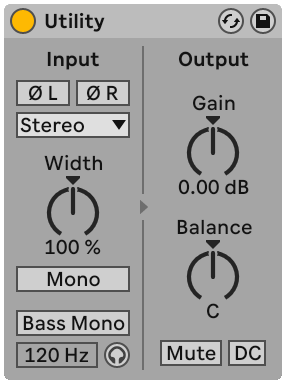
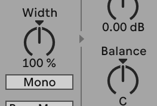
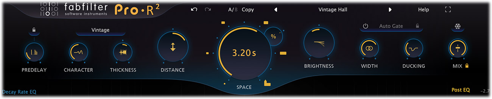
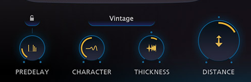
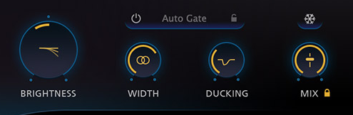

合成器空间 · 位置 / 宽度 / 深度
01 / 12
合成器的前后左右
概念依据：Ableton / Apple / iZotope · 无音频实测
先分清位置、宽度与深度
先安排音乐角色，再决定怎样摆空间。
AI 概念插画，非音频、声波或物理声场。
主旋律要清楚 · 铺底要支撑 · 琶音要有位置
分工可以随段落改变。
不是让每个声部都最响、最亮、最宽。
合成器空间 · 位置 / 宽度 / 深度
02 / 12
宽，也可以很靠前
感知示意：Ableton / Apple / iZotope · 无距离或参数映射
居中不等于靠前，窄也不等于靠后。
三个问题，分别做决定。
Pan
横向位置
L
R
Width
展开范围
窄
宽
Depth
前后层次
电平
相对空间量
频谱与起音
Depth 是多种线索形成的听感。
这里没有米数，也没有通用的“远近坐标”。


合成器空间 · 位置 / 宽度 / 深度
03 / 12
偏左，不一定是整声部左移
控件：Ableton Live 12 Utility · Pan 模式：Ableton / Apple
Stereo 的 Balance 通常改 L/R 相对电平。
右边独有的内容，可能只是变小了。
官方手册图：Width 100%、Balance C；不是推荐设置。
完整软件版本未显示，原图与裁切均未改参数。
要移动两路输入的摆位
先核对 DAW 的 Stereo Pan 或左右独立 Pan。
不要把所有叫 Pan 的控件当成同一种算法。
Utility：Width 0% 合为 Mono，100% 是原宽度参考。
这个百分比定义，不能跨插件照抄。
合成器空间 · 位置 / 宽度 / 深度
04 / 12
前后，先听干声与空间的对比
人为构造的 RMS 支路读数 · 代数可复核，非录音测量
湿声（Wet）相对更多，可能更退后，也可能更糊。
还要听干声电平、频谱和起音。
同源、同窗、同一标尺；RMS = 均方根
A
Dry 干声
Wet 湿声
−18
−30
B
Dry 干声
Wet 湿声
−18
−24
−36
−30
−24
−18
−12
−6
0
dBFS RMS
干湿差：12 dB → 6 dB
Wet 的 RMS 幅度约 ×2
非房间 DRR（直达/混响能量比），不能换算距离。
也不能推断听感倍数；总 RMS 还受两路相关性影响。
两个 dBFS 读数不能直接相加。
合成器空间 · 位置 / 宽度 / 深度
05 / 12
Pre-Delay 不是距离尺
定义：Ableton / FabFilter · 样本数为本文换算，非实测
主体可以先出现，空间随后跟上。
拉长间隔可能更清楚，也可能出现分离感。
只标混响开始时间，不画衰减长度。
10 ms
40 ms
Dry
Dry
Wet 开始
Wet 开始
0
10
25
40
60
80
100
时间 / ms
48 kHz：10 ms = 480 samples
40 ms = 1920 samples
人工时间示意，非脉冲响应或远近配方。
快速琶音 若出现松散的第二次起音，就尝试缩短。


合成器空间 · 位置 / 宽度 / 深度
06 / 12
开始间隔与空间线索，分开调
FabFilter Pro-R 2 官方帮助图 · © FabFilter
先在真实界面定位 PREDELAY 与 DISTANCE。
官方图：Vintage / Vintage Hall / 3.20 s。
只找控件，不抄参数；未显示的数值不能从角度猜。
PREDELAY
调原声与混响
开始的间隔。
DISTANCE
调该算法的空间线索，
不是米数。
Pro-R 2 低 Distance 时，早期反射反而更突出、更亮。
反射更响，不能通用地等于“更远”。

合成器空间 · 位置 / 宽度 / 深度
07 / 12
混响明暗与干湿关系，分开调
控件定义：FabFilter Pro-R 2 Help · 图片 © FabFilter
改混响的音色，不等于改合成器干声。
官方图裁切，保留原色与状态；不是本篇试验工程。
BRIGHTNESS
混响明暗平衡。干声是否太亮，要另外判断。
MIX
最终干湿关系。常规并行 Return 上设 100%，
再用 Send / Return 电平控制空间量。
图中 WIDTH 是这个混响的宽度控制，含内部声道联动。
不要把它当成 Utility Width 的同一套百分比。
合成器空间 · 位置 / 宽度 / 深度
08 / 12
降推子之前，先检查发送点
条件推导：Post-Fader、近似线性与静态处理 · 非音频测量
Post-Fader 发送时，推子变小，
干声和送往混响的信号通常一起变小。
Synth
轨道推子
总输出
Post-Fader Send
Reverb
100% Wet
Return
推子 −6 dB
→ 干声与混响输入通常一起下降约 6 dB。
要改相对 Wet，核对 Send / Return。
比例推导限近似线性、静态处理；旧尾声有过渡。
Pre-Fader、Ducking、饱和等另看路由。
也要确认发送是否跟随 Pan，以及取点在推子前后。
合成器空间 · 位置 / 宽度 / 深度
09 / 12
给每个声部一个任务
本文试听方案 · 角色与空间依据：Ableton / iZotope
循环同一段，先单变量，再协调多个线索。
Lead
主旋律音色
先保持旋律清楚，再加少量空间。
不要用无目的加宽替代清楚的主体。
Pad
持续铺底音色
先比基准降约 3 dB；必要时试高架 EQ −2 dB。
每步单独听，再调整相对 Wet。
Arp
琶音
先错开节奏或音域，再试左右位置。
Stereo 声源先认清当前 Pan 模式。
3 dB 与 2 dB 是试听步长，非最佳参数或实测结论。
每一步保存可退回状态；角色可随段落重新分工。
合成器空间 · 位置 / 宽度 / 深度
10 / 12
最后，听一次真正的 Mono
M/S 约定与代数：本文 · 参考 FabFilter / iZotope
合并 L + R；不要只听左声道。
关键旋律与音色，折叠后还成立吗？
约定 M = (L + R)/2，S = (L − R)/2
L = M + S
R = M − S
Mono = (L + R)/2
= M
Side 是左右差异项，不等于“两侧乐器”。
怎么查
1 先核对折叠增益，排除单纯音量变化。
2 听旋律是否变小、低频是否变空、Pad 是否遮挡。
3 依次旁路 Unison / Chorus / Delay / 加宽。
短暂负相关不自动判错；M/S 编码本身可逆。
要检查的是实际处理与目标播放方式下的结果。
合成器空间 · 位置 / 宽度 / 深度
11 / 12
别只在 Solo 里决定
综合试听建议 · 官方控件依据与完整原始资料见研究报告
一次完整对照，从音乐角色走到播放检查。
关空间，定角色、电平、左右。
调宽度，再增加相对 Wet。
用 Pre-Delay 与频谱修整。
带伴奏、匹配响度、折叠单声道。
旋律清楚 · 铺底有效
左右平衡 · 关键内容折叠后可用
本篇没有输入音频或插件实测，参数为示意 / 试听建议。
听感策略参考 iZotope 与 AES；不把深度换算成米数。
合成器空间 · 位置 / 宽度 / 深度
12 / 12
完整图文与可编辑源码
Kangdi Wang · 阅读 · 核对 · 复用
继续拆开合成器的空间：图解、计算与原始资料。
BIBTEX
2026
@misc{wang2026musicmixingsecrets,
author = {Kangdi, Wang},
title = {Music Mixing Secrets},
year = {2026},
url = {https://github.com/DDDPG/}
# {music-mixing-secrets}
}
具体结论请同时核对对应的一手资料。
仓库引用不代替原始来源或图片许可。
完整资料与源文件以仓库实际内容为准。